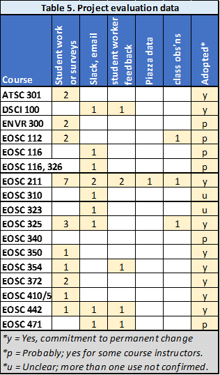
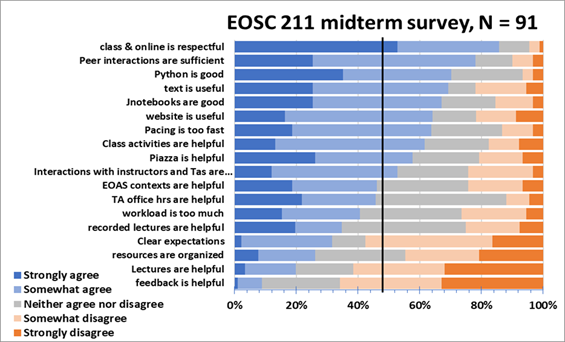

Project Evaluation and lessons learned
Contents
Project Evaluation and lessons learned#
How Evaluated#
One general measure of success is the rate of adoption of opensource practices introduced during the OCESE project across the Department. Most instructors teaching courses in EOAS that involve computing have committed to teach with Python so students learn quantitative Earth sciences using one language throughout their time in EOAS. Furthermore, there has been wide adoption of Jupyter notebooks as the delivery medium for courses with programing goals, as well as quantitative goals not involving programing. In particular, the newest faculty virtually all use Python in their research, as do nearly all graduate students.
More specific evaluation of OCESE project outcomes depends on the type of change or “product” and the context of their implementation. Table 5 summarizes the evaluation data obtained across the project, organized by the courses for which data were obtained.
Types of data summarized in Table 5 (columns) include:
students’ work, or surveys conducted before, during or after the course;
saved communication channels used by developers, TAs and instructors (usually email or Slack);
feedback from students who worked for the project;
analyzed Piazza discussion-board data; and
in-person or online class observations.
A rough idea of the extent to which initiatives were implemented for each course is summarized in the last column.
Of the 17 courses listed, 9 have committed to permanent adoption of OCESE project contributions, 6 have incorporated the changes but continued use depends on future instructors keeping those changes in place, and 2 courses (both of which were not part of the original proposal) experimented with use of new dashboards at least once but confirmation of continued use has not yet been obtained.
Examples of data gathered#
Details of evaluation data obtained for each course, including results and some implications, are given for each course starting here. Some examples of data types in this table include the following, while some ideas about lessons learned from these data are in the next section.
Student work#
In one example, submitted worksheets and student feedback were gathered from a group activity ENVR 300 involving the first iteration of the Atmospheric CO2 dashboard. Results were instrumental in generating a second more capable version. “advanced” projects possible (from TLEF poster #2). See details in OCESE documentation on the summary page for ENVR 300.
Student surveys#
Surveys in the 10 courses of the table above provided insights, feedback and quotes from students before, during and at the end of the courses. Data are presented and discussed for each course starting here.
Slack, email and informal discussions#
Online and email conversations were saved to provide anecdotal information about how the development process evolved. This was particularly useful for the most challenging course transformation, EOSC211, during which the instructor was both brushing up on Python programming skills and supervising student workers who were translating (or developing new) learning worksheets and assignments from MatLab to Python.
Student worker and teaching assistant feedback#
Quotes were retained from worklearn project reports related to work for EOSC 211, 354, 442, 471, and dashboards more generally. Emails and personal conversations were also kept where appropriate.
Piaza discussion board activity#

Online discussion board activity from the first and second year after transforming eosc211 are illustrated in the figure here. Some interpretation is discussed below.
Class observations#
EOSC 112 classes were observed to provide advise on a new in-class activity that uses IPCC Climate Atlas. EOSC 211 classes early in the OCESE project were observed using COPUS. The Python installation day in EOSC 211 was also obaerved to capture successes and challenges (it went unexpectedly well), 325 to observe the first use of new dashboards.
Some lessons learned from evaluation#
Comments below are representative of some of the lessons learned during this project, partly from specific evaluation work, but also from experiences carrying out project tasks. More details about “lessons learned” at various stages during the project can be found on presentations and reports; see Progress Reports, as well as poster presentations from May 2023, 2022, 2021, and Dec 2021.
The poster presentation for Earth Educators’ Rendezvous 2023 is all about lessons learned. Sections include:
Lessons learned: Engaging with data & concepts
Build, deploy, sustain
Learning
Lessons learned: Computing for EOAS students
When course conversion is straightforward
When course conversion is complex & costly
General observations re. course transformation
Lessons learned: Dep’t / Institution
Supporting instructors & TAs (pedagogy & logistics)
Infrastructure & servers / hubs
Open source and Open Education Resources (OERs)
From student work and survey-based feedback#
Most students appreciate opportunities to interact with concepts and datasets. Here is a sampling of open-ended feedback:
EOSC 112 dashboard feedback results:
“It explains the effects of the contributing factors in a visual way and was straight to the point when explaining with words.”
“Very organized and easy to use, simple and concise explanations and good visuals.”
“Suggestion: Maybe add more descriptions on what each contributing factor means and what does the sum selected factors actually do, especially for layperson.”
EOSC 372 student feedback:
“I liked how the dashboard exercise applied various concepts using real data from the world’s oceans. The online dashboard was quite easy to use and interesting as it allowed us to compare different nutrients/properties profiles in different oceans, synthesizing all the concepts in the course.”
EOSC 211 student feedback (analyzed & selected):
What was helpful? *“worksheets”, “practice problems”, “TAs are great”, “peers”.&
What was challenging? “organization”, coding and understand the question”, “the labs”.
Recommendations: “more feedback”, “explain code line-by-line”, “focus in lectures”.
This image provides one example of feedback data gathered in a course gathered midway through the first term of changes made in EOSC 211, “Computer Methods in Earth, Ocean and Atmospheric Sciences”.
Student survey feedback (as well as anecdotal in-class experiences) also highlight the importance of stabilizing the delivery of Jupyter hubs and other server-based resources, whether “in-house” or on cloud-based computing platforms.
A few quotes from instructors#
EOSC 372 Instructor feedback: “I am so impressed … I love how (a) sliders constrain and adjust axes, (b) data at various real stations can be chosen on a map and compared, (c) results can be saved to submit for assessment. I agree that now is the time to finalize an assignment, so thank you to the team!”
From ENVR 300, paraphrased: “The in-class group activity that used the atmospheric CO2 dashboard worked very well. I will likely use the same procedure when we are in-person again.”
From E325; email end of term: *“Thanks so much for detailed assessment. Students suggestions are very helpful and I will reflect on them in the rest of this term and certainly incorporate them in the course design next fall.”
From slack, email and informal discussions with teaching teams#
These collections of communications were instrumental in keeping abreast of progress, challenges and solutions for the variety of project threads. Lessons learned from these sources are primarily about coordination and execution of educational development projects.
For example, support from graduate students who are simultaneously assigned as teaching assistants has been critical for enabling rapid adjustments when problems occur or providing timely points-of-contact for students. They also can carry out the work of writing, coding, testing and assessing that instructors may have little time for, during development and piloting any major or minor adjustments to a course.
Another lesson learned from engaging with instructors is that some need support to conceive, design and deploy the active learning opportunities enabled by dashboards or Jupyter notebooks. Of course, some instructors are already highly “action oriented” in their pedagogy. However, in other cases it was worth spending OCESE project time helping instructors adjust their teaching strategies so that students can be more engaged with concepts and data sets. This requires repeated engagement at all stages of course design, modification and delivery, as well as followup after teaching the section, and in subsequent terms. These innovations then have to survive future transferals of the course to instructors who were not involved in development, and this is not always guaranteed.
Regarding course conversions to Python (from any other language), the OCESE project has made it clear that converting beginner’s courses are challenging & costly because “everything” must be changed. In comparison, converting courses that expect students to have had at least some prior computing experience is much more straightforward, especially if converting assignments or labs only. However, for any such conversion, the choice of how Jupyter Notebooks or dashboards are served must be made carefully because these hubs or servers must be “bomb-proof” and scalable. Otherwise student learning may be compromised and instructors will experience a highly stressful term.
From student workers and TA feedback#
Student contributors, whether employed as project workers (usually with UBC Work Learn support) or as teaching assistants, have been a lynch-pin for this project. They carried out all dashboard programming and much of the heavy-lifting of translating courses to Python. All these contributors provided important, insightful and creative input that ensured implementation of most initiatives were as trouble free as possible. Nearly all provided spontaneous, or requested reflections on their work which recognized how much they learned about teaching, learning, coding, or project management. Two workers also sent word from their subsequent employments (after graduating) expressing satisfaction with how lessons they learned as members of this team contributed directly to success in their workplaces.
E.g.: “my boss has asked me to convert all our data quality control from excel to python, and to bring the whole team up to speed on doing analysis with Python, which basically means delivering a highly condensed version of EOSC211 to our atmospheric team. … I am using pretty much all the skills I developed over the last 2 years!”.
Other quotes and reflections are being gathered for the OCESE project documentation page about training of faculty and students.
From Piazza discussion board topics#
Student concerns raised on the Piazza platform seem to be relatively similar in both terms, except for posts regarding quizzes and exams. The higher proportion of these posts in 2021 relates to difficulties with the autograding software. In general, it seems that logistical or infrastructure challenges were less concerning to students than they were to instructors. Students are forgiving and adaptable but are most concerned when grading and turn-around of grades is compromised. More details are given on the EOSC 211 page.
From classroom observations#
Courses observed are well taught, perhaps not unexpectedly, since faculty keen to participate in education development projects are already implementing “best practices”. Widespread use of opensource resources and tactics is still evolving, partly because the opensource communities are still fine-tuning their materials, even while testing them in “live” courses. Observations have also shown that some aspects we worried about are less troublesome than anticipated. For example, setting up consistent installations of Python and Jupyter notebook software on all students’ laptops was expected to be labour intensive. But this challenge can be mitigated by careful preparation of “installation environments” followed by one 45 minute lesson (with extra TA support) devoted to installations. For details see our Python and Jupyter Notebook startup page.
Observing initial use of dashboards in lessons enabled developers to offer advice on refining the workflow during the lesson. For example, before tackling a real problem with new facilities, students must be given some time to “explore” the new tools to familiarize with the interface and the corresponding tasks. This is well-known from literature on use of simulations in teaching, but advising instructors is easier based on observations rather than depending upon third party publications to convey the recommendations.